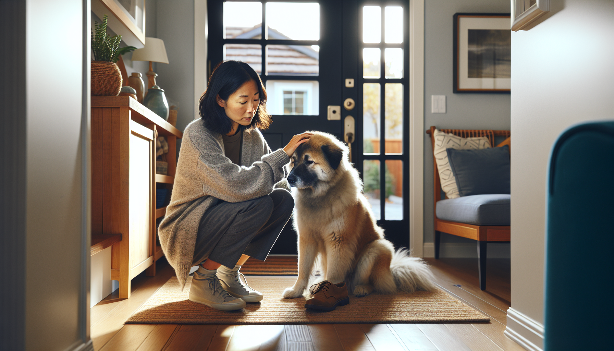

Separation anxiety in dogs is one of the most common behavior challenges dog owners face, especially with new puppies, recently adopted rescue dogs, and pets whose routines have suddenly changed. If your dog panics when you leave, barks nonstop, destroys the door frame, or has accidents even though they are house-trained, you are not dealing with a "bad dog." You are likely seeing a stress response rooted in fear, frustration, or over-attachment.
The good news is that separation anxiety can improve with the right plan. Modern, science-backed dog training focuses on reducing fear, building independence gradually, and setting your dog up for success rather than punishing symptoms. In this guide, we will cover the most common signs of separation anxiety in dogs, what causes it, how to tell it apart from normal boredom, and practical solutions that actually help.
Separation anxiety is a behavior condition in which a dog becomes distressed when separated from a specific person or left alone. Some dogs struggle only when their main attachment figure leaves. Others become upset whenever they are isolated, even if another person or pet remains in the home.
This is more than simple dislike of being alone. A dog with true separation anxiety may experience panic-like behavior within minutes of departure. Their body and brain are reacting as if something is wrong, which is why punishment rarely works and often makes the problem worse.
While any dog can develop separation anxiety, it is especially common in:
Many owners first notice separation anxiety through complaints from neighbors or damage near exits. However, the signs can be subtle at first. Watching a camera while you are away is one of the best ways to understand what your dog is actually doing.
Typical signs of separation anxiety in dogs include:
Some dogs show distress the moment they notice pre-departure cues, such as you picking up keys, putting on shoes, or grabbing a bag. Others remain calm for a few minutes and then escalate once they realize you are truly gone.
Not every dog who chews the couch or barks while alone has separation anxiety. Some dogs are under-stimulated, under-exercised, or simply young and curious. The difference matters because the training plan will be different.
A bored dog may:
A dog with separation anxiety is more likely to:
Of course, dogs can experience both boredom and anxiety at the same time. That is why observation, tracking patterns, and a thoughtful training plan are so important.
There is rarely one single cause. Separation anxiety usually develops through a combination of genetics, life history, temperament, and environment. Some dogs are naturally more sensitive to change or social isolation. Others develop anxiety after major transitions.
Common triggers and contributing factors include:
Medical problems can also mimic or worsen anxiety-related behavior. Pain, gastrointestinal distress, cognitive changes, urinary issues, and age-related decline should always be considered. If your dog's behavior changed suddenly, a veterinary checkup is a smart first step.
The most effective treatment for separation anxiety focuses on changing your dog's emotional response to being alone. The goal is not to force your dog to "deal with it," but to teach that being alone predicts safety, calm, and good things.
Here are the core strategies professionals use:
Progress is often non-linear. Some dogs improve quickly with consistency; others need a slower, more customized plan. The key is staying under your dog's panic threshold.
If your dog's anxiety is mild to moderate, this basic framework can help you begin safely:
Track the baseline. Use a camera and note how long your dog stays calm after you leave. This tells you where to start.
Practice micro-absences. Step out for one to five seconds and return before your dog becomes distressed. Repeat until that feels boring and easy.
Increase slowly. Move from seconds to short minutes in tiny increments. If your dog starts whining, pacing, or refusing food, the step was too big.
Mix easy and harder reps. Do not increase every single time. Include shorter, easier absences to keep confidence high.
Train pre-departure cues separately. Put on your shoes, sit back down. Pick up keys, then watch TV. Open the door, close it, and stay home.
Support emotional regulation. Make sure your dog gets adequate sleep, exercise, sniffing opportunities, and predictable routines.
Avoid rushing the process. If your dog can handle 30 seconds comfortably, that is progress. Lasting improvement comes from many successful repetitions, not from testing your dog until they fail.
Well-meaning owners often try methods that accidentally increase fear. Avoid these common mistakes:
Crates can help some dogs feel secure, but for dogs with crate-related panic, confinement may intensify distress. Always evaluate whether your dog is calmer in a crate, pen, gated room, or dog-proofed open space.
If your dog is injuring themselves, panicking within seconds, unable to eat during training, or not improving with careful practice, reach out for support. A qualified positive reinforcement trainer, behavior consultant, or veterinary behavior professional can help create a plan tailored to your dog.
In moderate to severe cases, medication prescribed by a veterinarian may be part of treatment. Medication is not a shortcut or failure. For some dogs, it lowers anxiety enough for learning to happen. The best outcomes often come from combining behavior modification, management, and veterinary guidance.
Living with a dog who struggles to be alone can feel exhausting and heartbreaking, but there is real hope. Separation anxiety in dogs is not stubbornness or spite. It is an emotional challenge that deserves patience, structure, and compassionate training. By learning the signs early, ruling out medical issues, preventing repeated panic, and following a gradual desensitization plan, you can help your dog feel safer and more confident.
Whether you are raising a puppy, helping a rescue dog settle in, or supporting a long-time companion through a rough patch, small wins matter. Calm for 10 seconds becomes calm for 30. Calm for 5 minutes becomes calm for 20. Consistency, not perfection, is what changes behavior over time.
Get our full Dog Training eBook series — new titles added weekly.